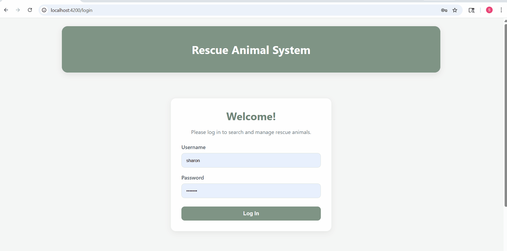
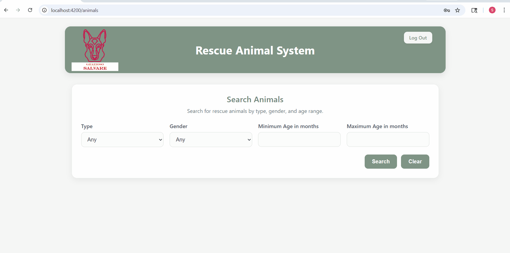
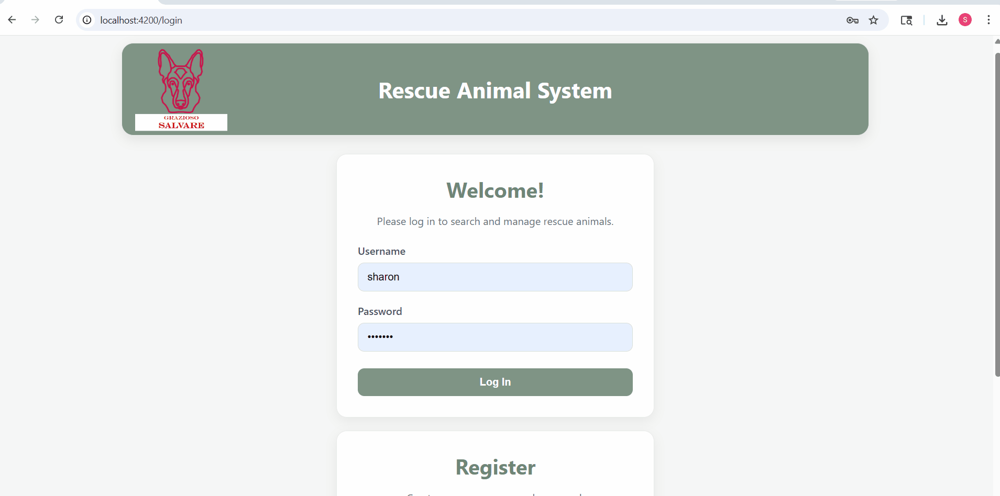

Self-Assessment
Throughout the Computer Science program, I developed a strong understanding of how to design and build complete applications. Early in my school career, my focus was on learning programming language and writing code that worked. However, over time I began to learn how to structure programs, connect different components, and think more about how systems function as a whole. Throughout the program, I also worked on a variety of smaller assignments and projects that helped reinforce these skills, including working with different programming languages, debugging code, and applying problem-solving techniques across different scenarios. This capstone project helped me apply those skills by turning some of my earlier work into a complete full-stack application, which also helped solidify my interest in back-end development.
I gained experience using tools like Git and GitHub to manage my work, which helped me stay organized and understand how developers collaborate in a real-world environment. This includes working with version control, managing changes, and reviewing code. I also improved my ability to communicate technical ideas clearly by building an application and ePortfolio that are easy to navigate and understand, and by explaining my decision-making processes through a code-review and enhancement narratives.
In my Capstone project, I applied data structures and algorithms by creating a scoring system that ranks animals based on multiple criteria. I also strengthened my software engineering and database skills by building a full-stack application using a MEAN stack which includes Angular, Node.js, Express, and MongoDB. This included creating API endpoints, connecting the front end to the database, and implementing user authentication using JSON Web Tokens, or JWT.
This project also helped me begin developing a security mindset by requiring user login and protecting certain actions. While I know there is more to learn in this area, I do understand the importance of securing applications and managing user data safely.
The artifacts I selected and enhanced in this ePortfolio work together to showcase my growth across software design, algorithms, and databases. Together, they demonstrate my ability to improve existing work, solve problems, and build more complete and functional applications.
Overall, this program helped me move beyond a basic understanding of coding to now understanding how to design and implement real full-stack web applications. I feel more confident in my ability to learn new technologies and will continue to apply the skills learned in the Computer Science program as I begin my career as a developer.
Code Review
The link below takes you to my code review, where I walk through my 3 original artifacts and discuss their existing functionality, review the code, and discuss my enhancement plans.
Although typically completed by a peer rather than the original author of the code, this code review was an important step in the code enhancement process because it demonstrates what the original artifacts did well and what improvements could be made.
Watch Code Review VideoEnhancement 1: Software Engineering and Design
My original artifact for enhancement 1 was created in August of 2024 in a course focused on object oriented programming. It contains 4 Java classes that make up a console application which was designed to allow users to search through an array of rescue animals to find animals suitable for search and rescue training. The program demonstrates foundational object-oriented principles such as encapsulation and class structure, but was limited to a console interface.
I chose this artifact because, while it met the requirements of the original course, there was an opportunity to turn it into a working web based application with a functional front-end to demonstrate my growth in software engineering and design. I accomplished this using Angular, node.js, and express and reorganized the structure of the program to separate it into backend and front-end components. For this enhancement, I implemented a log in layer and a search layer. Once a user logs in, they can search for an animal by filtering by criteria (animal type and gender). Animals can also be added to a user's favorites or reserved.
Through this process, I learned the importance of separation of concerns and how structuring an application into layers improves readability, scalability, and maintainability.
Enhancement 1 Demo

This gif showcases user log in page and initial front-end search functionality.
Enhancement 2: Algorithms and Data Structures
My original artifact for enhancement 2 was created in the fall (June-August) 2025 term from a Client Server Development course. The artifact is a Jupyter Notebook that is used with the Python based CRUD application file chosen for my enhancement 3 below. I chose this specific file for my algorithms and data structures enhancement because it includes a filtering option for the search results that filter the entire database of animals by animal type.
This artifact did have a basic sorting algorithm, however I enhanced it by creating a scoring system. With this newly implemented algorithm, a user narrows down their search results by filters and the algorithm sorts the search results by the highest scoring animal based on specific criteria. For example, an animal that is already fully trained in search and rescue will appear before an animal not yet trained.
I researched and learned a lot about how to implement a sorting algorithm with this enhancement as far as how I can evaluate multiple criteria based on a user's filter inputs and filtered, mapped, and sorted results. A challenge I overcame with this enhancement was with animal ages because they were initially stored as strings in months and years. I converted the age by splitting the string and multiplying by 12 to compare all ages in months. This left the user interface intact displaying the ages in months and years while also accurately accounting for age in the sorting algorithm.
Enhancement 2 Demo

This gif showcases search algorithm function and adding favorites.
Enhancement 3: Databases
My original artifact for enhancement 3 was created alongside the artifact used in enhancement 2 in the fall (June-August) 2025 term from a Client Server Development course. It consists of a Python-based CRUD application that interacts with a MongoDB database to retrieve and display animal data. While the original artifact demonstrated basic database operations, it did not integrate with a user-facing application and did not support authentication or structured API design.
This artifact was the perfect final step for my project because it did demonstrate database calls, but needed a lot of improvement; and the improvements completed my full-stack application. This enhancement showcases my skills in implementing a structured MongoDB database using collections. I created RESTful API endpoints with Express to complete the MEAN stack, and allowed users to search for animals, add them to their favorites or reserve animals. During this enhancement, I also completed JWT authentication for users, along with user registration; and tied the back end into the front-end. Through this enhancement I learned about creating secure API endpoints and integrating backend services with the frontend application.
Enhancement 3 Demo

This gif showcases log in credentials working, searching the database by filters, and results displaying with pagination.